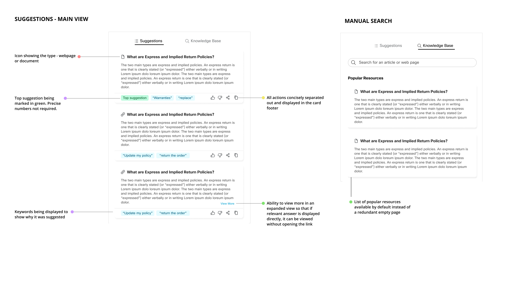

Agents in contact centers spend a significant amout of their time looking up solutions and answers to customer queries in knowledge bases. Since the major objective in these interactions is to handle the cases as soon as possible and ensure high customer satisfaction, it becomes pertinent to have a better way for agents to identify relevant articles to refer.
According to a survey conducted by the Aberdeen Group, agents spend 17% of their time searching for relevant knowledge to do their job. This is because most agents need access to multiple back-end systems and sources of information in real time.

Google, recently announced a suite of features in the realm of Contact Center and one of the main features was Agent Assist. Live agents are empowered with continuous support during their calls, as Agent Assist transcribes calls in real time, identifies customer intent, provides real-time, step by step assistance (recommended articles, workflows, etc.), and automates call dispositions. Cisco decided to partner with Google to bring this feature to our customers.

The Agent Assist API was still in it's nascent stages. At the core, it was providing links to articles. However, the end goal was to provide a way of extracting and summarizing relevant snippets from the article and tailor in such a way that it could be used directly in chat messages or spoken out aloud by agents during a call. Thus, we decided to map out the overall ecosystem and understand the realm of possibilities of having the ability for an AI system understand the conversation of the call or chat conversationa and provide suggestions to agents. In essence, we identified the following touchpoints:
1. Customers could themselves be suggested links to articles in a chat conversations.
2. Agents could be supported by links to documents and web-pages and also provided direct responses for usage.
3. An efficient way to upload and manage documents for the admin.
4. Supervisors to keep track of topics which would help in priortizing teams, queues and training.
We focused on the agent experience piece for the MVO deliverable and expanded on the realm of possibilities within it. We broke down agent touch-point possibilities into the 3 major categories : Before Call/Idle State, During Call and Post Call
We set out by defining a set of principles that we should account for in the design. We looked at some existing literature out there on User Experience principles when it comes to building AI based services. The most noteworthy one was the Google's People + AI Guidebook . Here is the set of guidelines we decided to follow in the design explorations.
Transparency
We should have a way of surfacing transparency to the agent about some of the inner-workings of the system.
Feedback Mechanism
There should be a way to gather feedback from agents on the suggestions being provided.
Non-intrusive
It is critical to provide suggestions in a non-intrusive manner to avoid unnecessary distractions.
Agent in Control
Agents should feel in complete control of the system at all times. Objective is to augment agents, not replace.
Seamless Error Handling
Errors are common to AI systems, there should be a graceful way to tackle any kind of issue or error.
Set Expectations
It would be important to level set the expectations to avoid disappointment in the service.
We went on to define a set of key specifications for the Agent Assist feature
Stack Ranking
Suggestions should load based on order of relevance
Search
Agents should be able to search for the documents by themselves as well
Feedback
Agents should be able to provide quick feedback
We first focused on defining where the suggestions should appear in the desktop layout. After a few iterations, we agreed upon having a section for the article suggestions in the auxiliary pane.

After defining the positioning of the suggestions, we focused on defining the nuanced details around these suggestions. Design decisions were taken based on the guiding principles that have been enlisted above as well and also taking into consideration the possibility of bringing in some of the ideas captured in the idea map above. We wanted to keep the cards for suggestions uniform such that the name of the document/article would be at the top and act as the link and have card height uniform for all suggestions. We also wanted to keep the suggestion non-intrusive thus more relevant tabs like Customer Information and Contact History were prioritized over Agent Assist. But to convey that suggestions were ready for usage, we had a notification badge appearing next to the icon.
We developed an initial version for early field trials with a couple of customers who were excited to test it out. Based on the feedback we incorporated a few changes before going GA.
In essence, we identified the following major feedback points:
1. Truncation of the document name by limiting it to the top line(and dedicating the remainder of the area to the feedback icons) was not ideal as the latter half of some of the document/webpage names would be the unique identifier and help in decision making.
2. The reason for a particular suggestion being proposed was not very clear.
3. The confidence score number was not that meaningful. Agents were mostly interested in the top 1-2 suggestions.
4. Sometimes, the snippet itself would be enough to get to the answer. Limiting the line length to 2-3 lines would require them to go the link which was frustrating.
5. Feedback would not be provided immediately as a habit. It would be more ideal to do that during the wrap-up state.
6. There was some confusion around the word search as a tab. Some agents thought that it was a search on the suggestions itself.
"I would rather have the relevant answer shown right there, than having to go to the link again and search for it using those keywords and it seems like the answer is right there... so it is a bit frustrating."
 Based on the feedback, we decided to make a few key changes:
1. We removed the icons for upvote/downvote to the bottom section to allow for more screen-estate for the name.
2. The dedicated footer area now also displayed some top key-phrases that were parsed by the AI engine.
3. We had a call-out for only the top most suggestion. For the remainder, it was anyways stack ranked.
4. The card height was expanded to have 6 lines of text from 2. We identified that showing more information upfront for each card was more important than showing more suggestions in a singke view for which they can scroll anyways and the chanes of someone going to the lower ranked suggestions is rare. We also gave the flexibility to expand the card and display more text if required for ones where the recommendation snippet is larger.
5. We displayed the suggestions in the wrap-up phase and asked for optional feedback. If upvoted, it was by default captured as part of the notes summary.
6. We changed the name of the 2nd tab to Knowedge Base to make it more explicit.
Our two customers were significantly convinced by the usefulness of the agent assist feature and decided to purchase the license. The announcement of GA for this feature was met with a lot of excitement in the field and we had more than 50% of our customers signed up for a 30 day trial phase. More than 90% of them eventually subscribed for it. Customers reported a drop of approx 18% in handle time on an average over a sustained use of 3 months. Also as part of the solution (after the feature went live), we experimented in providing a simple topic modeling visualization for an admin/supervisor use-case to a select set of customers which helped them in identifying popular themes of conversations and help in better distribution of agents across teams and also in improving their own knowledge bases. We later added this dashboard in our Reporting module.
"Our agents really appreciate this new feature, it has made their work significantly easier. We would love to see this get even better over time."
This project was very unique in the sense that we had to engage with stakeholders outside Cisco - Google's Engineers and Product Managers on a weekly basis initially. It was my first exploration in the domain of AI based experiences in an industry setting. I learnt some essential ideas around recommender based systems in general. I also learnt a lot from existing literature on AI based UX. This helped in defining some design principles and it was enlightening to use those principles in practise and get feedback from customers and improve on the design based on quick feedback from the early trials.